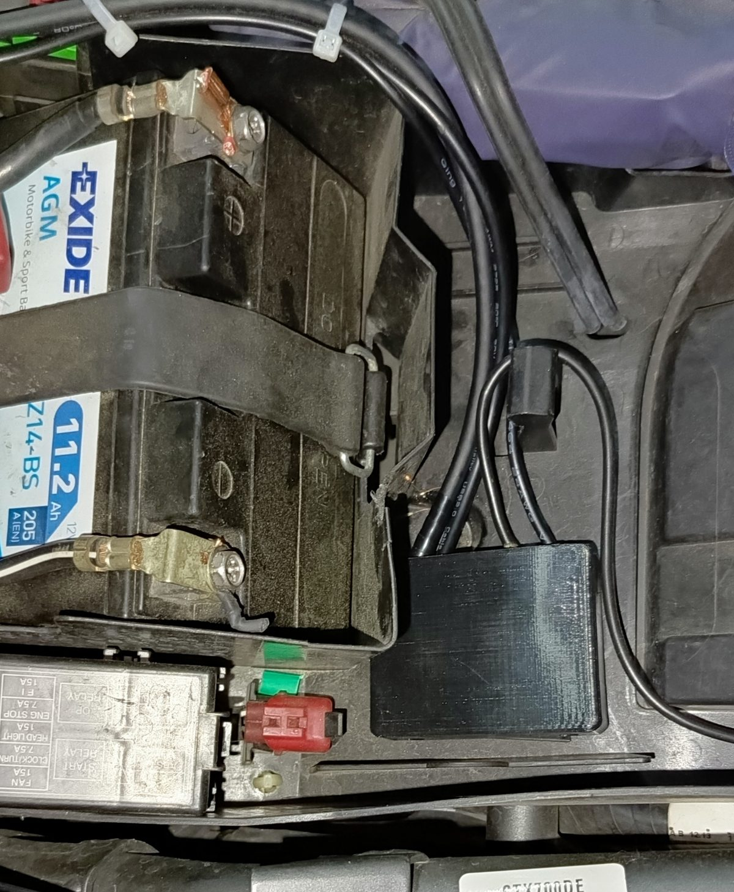
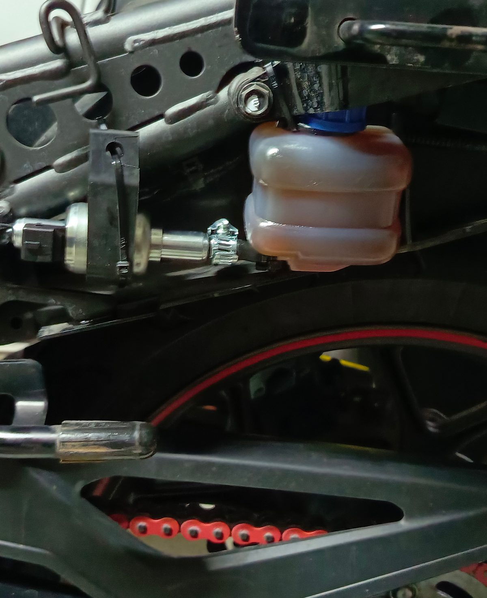
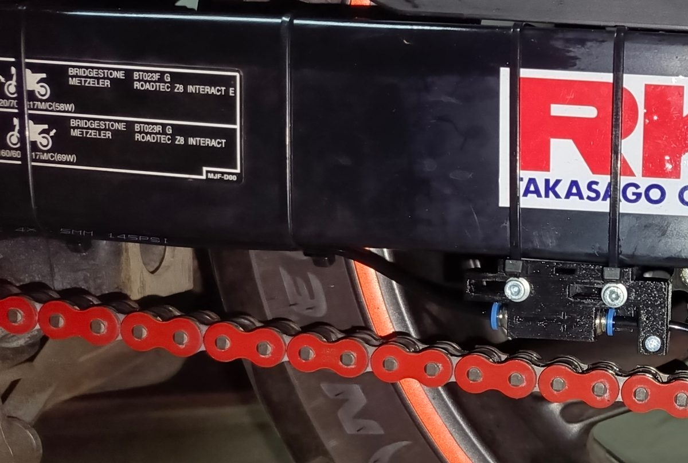
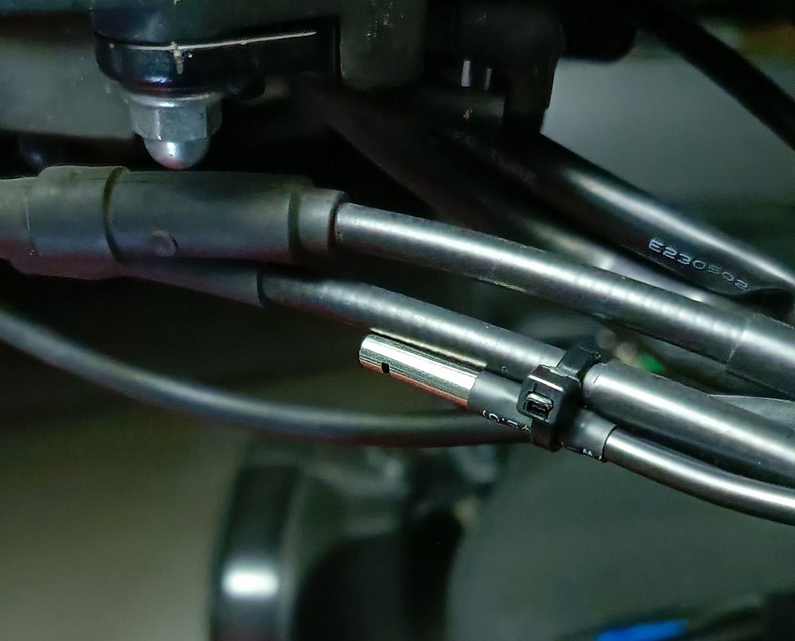
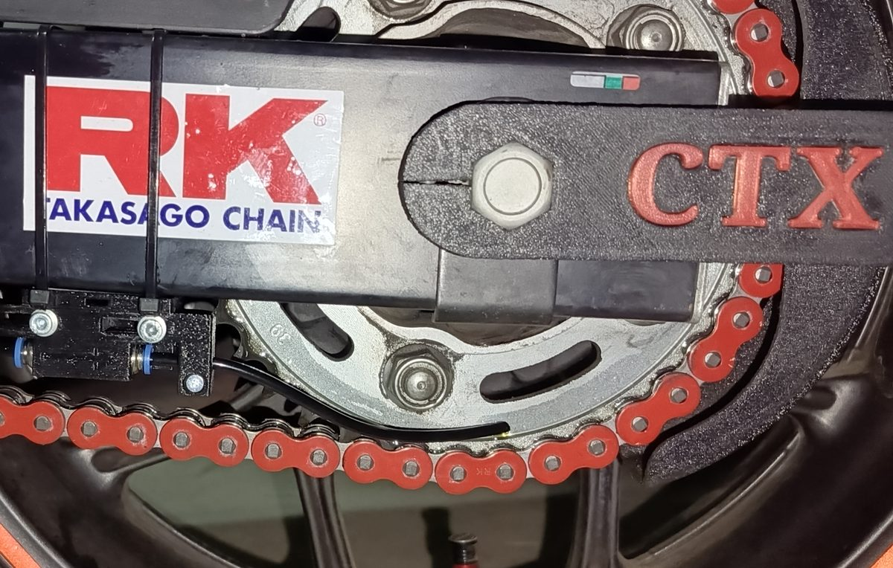

Cały montaż zajmuje zwykle jedno spokojne popołudnie i typowe narzędzia warsztatowe. Poniżej przechodzę przez każdy etap — od wyboru miejsca po pierwsze uruchomienie.
Znajdź osłonięte miejsce na główny moduł olejarki — pod siedzeniem, przy akumulatorze albo w okolicy błotnika. Ważne, żeby był chroniony przed bezpośrednim strumieniem wody i błota.

Zbiornik umieść wyżej niż pompę, jeśli to możliwe — grawitacja pomaga w równym podawaniu oleju. Upewnij się, że korek wlewu jest łatwo dostępny do dolewania. Na zdjęciu przykładowy montaż zestawu zbiornika i pompy w Hondzie CTX700 za boczną owiewką — po jej zamontowaniu zestaw jest niewidoczny.

Przewód olejowy poprowadź wzdłuż wahacza w stronę tylnej zębatki. Końcówkę aplikatora ustaw tak, aby olej trafiał na wewnętrzną stronę łańcucha, tuż przed zębatką. Aplikator posiada zawór jednokierunkowy — strzałka na zaworze musi być skierowana zgodnie z kierunkiem wylotu aplikatora.

Czujnik odpowiada za wykrywanie deszczu i pomiar temperatury. Najlepiej zamontować go na kierownicy, gdzie ma swobodny dostęp do powietrza. Przewód poprowadź wzdłuż oryginalnych wiązek motocykla i przytwierdź do nich opaskami.

Napełnij zbiornik olejem do łańcucha, a następnie w aplikacji uruchom funkcję zalewania (priming), aż olej dojdzie do aplikatora. Sprawdź, czy krople trafiają dokładnie na łańcuch przy zębatce.
